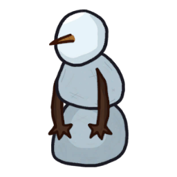
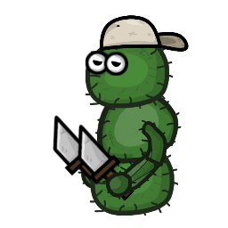
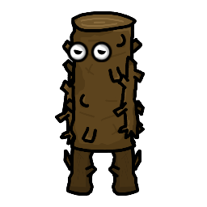
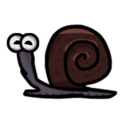
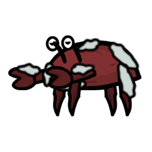
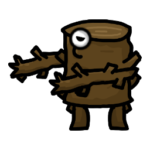

Monsters
7 entries
 Angry Snowman | 610 | 114 | 48 | 48 |
 Cactus Roller | 210 | 46 | 21 | 21 |
 Logger | 230 | 46 | 28 | 28 |
 Red Snail | 36 | 6 | 9 | 9 |
 Snail Snail | 18 | 2 | 6 | 6 |
 Snow Crab | 600 | 88 | 34 | 34 |
 Thumper | 80 | 12 | 15 | 15 |
No entries match these filters.